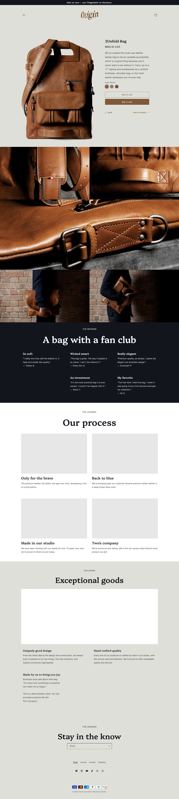
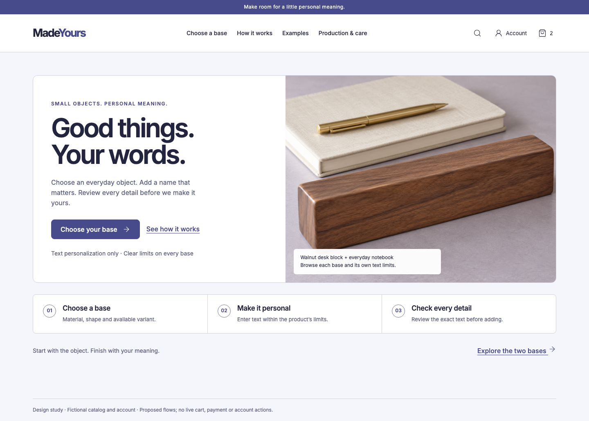
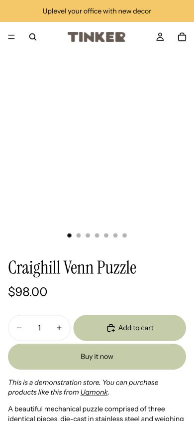
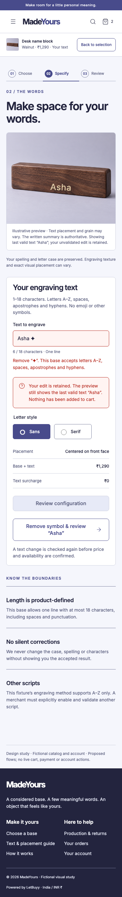

A process before purchase.
Saved primary evidence and original MadeYours design v1. Public page text rechecked through web retrieval on 22 October 2026; this did not submit cart, login or purchase actions. Screenshots below are preserved saved research, not new interactive captures.
Small range, deliberate choice.


Observed state: featured product, color selection, direct cart action; process/journal and maker story below. Some below-fold media were still blank in the saved capture.
theme-origin-demo.myshopify.com

Proposed state: base discovery and choose → specify → review. A low catalog count never removes the configuration review step.
Editable responsive sourceUser problem: A small assortment can support a direct choice, but a personal name changes the object that will be produced.
Retained convention: Clear object media and price, concise selection and visible maker/process education. No unsupported review count copied.
Original difference: MadeYours introduces a bounded text workflow before any cart mutation. Home names the three stages, and cards expose the method and length limit.
Required contract: Product configuration schema, normalized accepted text, server price consequences and immutable order/fulfillment snapshot (C/D). A marketing process panel alone cannot deliver this.
The purchase rail becomes a workspace.


Observed fixture: mechanical desk puzzle, price, quantity and cart action; detail/dimension modules in desktop evidence. This narrow capture has an unloaded media area. No successful cart mutation was tested.
Tinker observed product URL

Proposed fixture: name block with entered text “Asha ✦”, precise invalid-character error, retained edit and a correction route.
Editable responsive sourceUser problem: Object dimensions do not answer which text is accepted or whether a preview represents the item exactly.
Retained convention: Object-first gallery, named option, price close to purchase and mobile stacking. Tinker’s workspace categories remain a useful retrieval convention; its current homepage text was rechecked.
Original difference: The mobile workflow exposes one step at a time, preserves the invalid draft, marks the preview illustrative and gives the accepted written summary priority. Same-SKU configurations remain distinct in cart and order.
Required contract: Grapheme/Unicode validation under a product allowlist; per-line configuration identity; recovery/revalidation and idempotent checkout intent. Tinker listing features do not prove these exist.
Current retrieval limit: Tinker collection /collections/objects was inaccessible through the web retrieval tool. Saved collection evidence is used with its recorded date; no fresh collection behavior is claimed.
Scope of this comparison
This is an expert design interpretation, not a user study, conversion finding or accessibility certification. Source imagery remains in the saved research boundary; none is shipped as a MadeYours design asset. The panels use equal presentation widths and explicit viewport/state labels. Open the full-size evidence for actual source pixels.